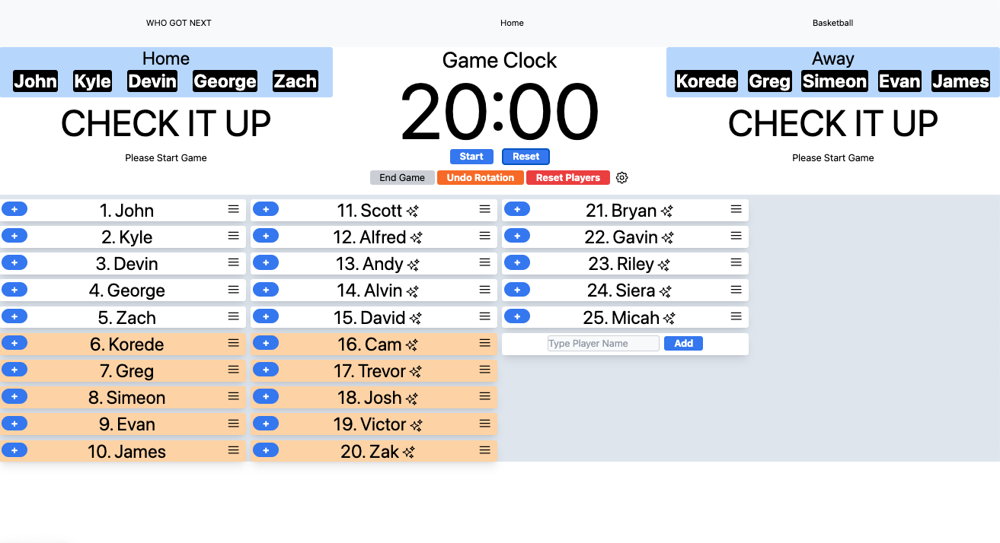
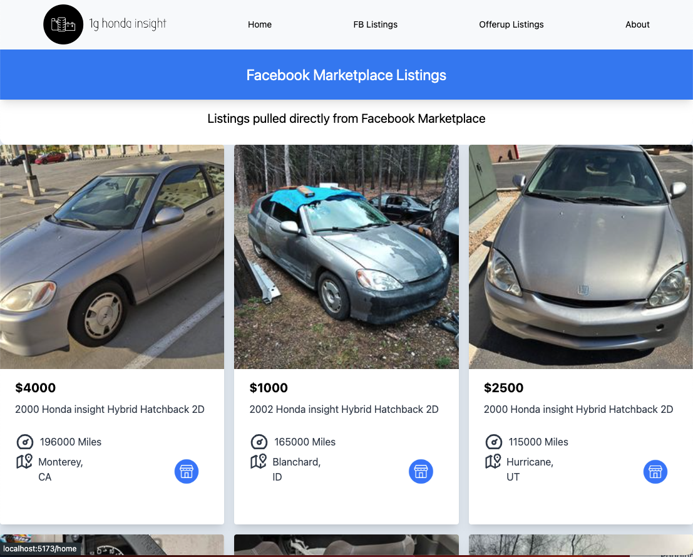

Evan is a software engineer, based in Los Angeles.
Work
Who Got Next?

Basketball Game Scheduler and Score Keeper
TypeScript | React
Solving a real-life problem: Tracking who is on next at pick-up basketball, and score keeping.
I absolutely love this application because I personally benefit from it every week when
I play basketball at church. I painfully watched as my friend Alvin
kept track of the order of over 30 people for who was playing next -
all on pen and paper. That's when the lightbulb went off in my head to build an app
that kept it all organized.
Honda Insight Hub

Used Car Marketplace Web Scraper
Python | Flask | Selenium | TypeScript | React
One of the quirky cars that I drive is Honda's first ever hybrid car
that looks like a jelly bean. I have multiple friends who were curious and
ended up buying one for themselves, so I wanted to create a central
place for all things Honda Insight.
I Leveraged Selenium to web
scrape, clean, and process used car market listings data from sites like
Facebook Marketplace, OfferUp, LKQ, and aggregated all the listings
into one place, and used ChartJS to build a price trends metrics
dashboard that enables users to make informed buying decisions.
Computer Vision Basketball Shot Tracker
Using Computer Vision and Machine Learning to Track Basketball Shot Makes / Misses
OpenCV | YOLO | Python | Machine Learning
I wanted to have technology track my basketball shooting percentage for me, so I built
an application that could do it for me using computer vision and machine learning. I Leveraged
a deep learning object recognition model called YOLO, and trained it
on 1000s of photos that I manually labeled. Combined with OpenCV, the model
was able to make real-time inference on my shot attempts and makes on a video the model had never seen before.
After spending my early career in recruiting at Google and selling Adtech Software at a startup, I decided to make
a complete pivot into software engineering and have been loving it.
While I'm away from my desk, you'll catch me shooting hoops, surfing or snowboarding.